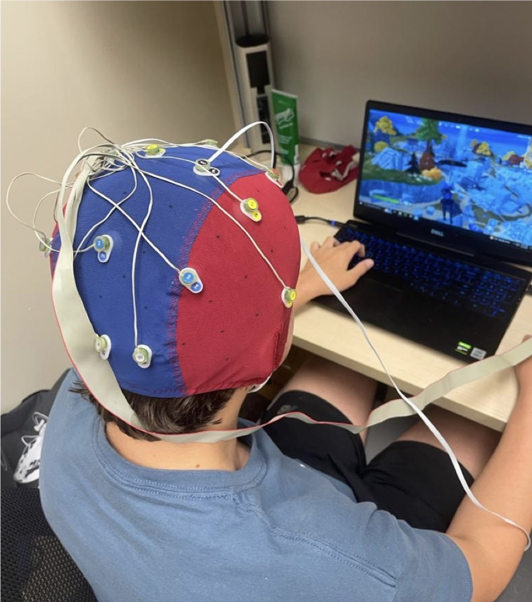
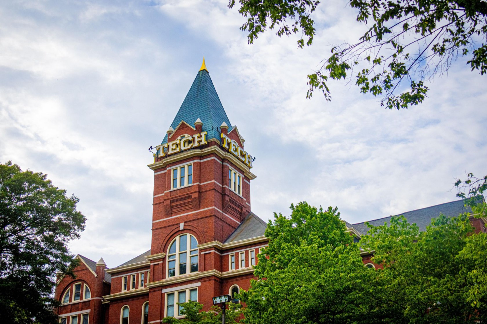

My Journey
Background
I was born in Venezuela to two Computer Engineering majors, so I was introduced to code at a very young age. Due to political turmoil, my family immigrated to the United States in 2014, where my parents studied to earn their PhDs in Computer Engineering at the University of Georgia.
My own interests initially began with purely programming. During COVID, my dad pushed me to take on coding courses such as Harvard's CS50. After taking these courses, I realized that programming came very naturally to me. I enjoyed solving complex problems, and writing code felt like much more than just another assignment.
In high school, I joined Walton High School's STEM Engineering Academy. This academy provided me with a pathway to get hands-on experience with electronics and a variety of forms of engineering. Throughout my time in high school, I took four engineering courses created by Project Lead The Way (PLTW). Out of the four courses, one really sparked my interest. It was a class called Digital Electronics, where we learned about logic gates, Boolean algebra, electric circuits, and computer hardware. That class sparked a second interest apart from just programming. That new passion for hardware led me to follow in my parents' footsteps and pursue Computer Engineering at Georgia Tech.

Outside of the classroom, I am also very passionate about research. Over the summers, I interned at Kennesaw State University's IoT (Internet of Things) lab, where I researched human signals using biomedical devices. From my internships, I wrote two research papers that have since been published, and a third that is being prepared for review. I have also worked part time at a tech company named Wind Consulting, where I have built projects using AI agents and automation.

Today, I am a first-year Computer Engineering major at Georgia Tech. Throughout my time here, I plan to pursue the Distributed System and Software Design and Cybersecurity threads. My goal for the future is to keep growing the programming skills I already have a deep passion for, and to build technology that is both efficient and secure.
Where I'm Headed
My long-term goal is to build technology that is both efficient and secure. I want to work with both software and hardware to build devices and systems that can be used by everyday people and corporations alike to make life easier. In the near future, I am looking to get a software engineering internship in the summer of 2027.
My Plan
Year 1 · 2026–27Foundations · Summer 2027 software internship
Focus: Build a strong foundation in digital logic, object-oriented programming, and discrete math, and land a first software internship.
Fall 2026
- ECE 1100ECE Discovery Practicum
- ECE 2020Digital System Design
- CS 1331Intro to Object-Oriented Programming
- APPH 1040Scientific Foundations of Health
- POL 1101Government of the U.S.
Spring 2027
- CS 2050Intro to Discrete Math for CS
- MATH 2552Differential Equations
- CHEM 1310General Chemistry for Engineers
- MUSI 3630The History of Jazz
Year 2 · 2027–28Core Computer Engineering · Start the DSSD thread
Focus: Connect hardware and software through systems programming, and begin the Distributed System & Software Design thread.
Fall 2027
- CS 1332Data Structures & Algorithms
- ECE 2035Programming for HW/SW Systems
- ECE 2031Digital Design Lab
- SPAN 2001Intermediate Spanish I
Spring 2028
- CS 3251Computer Networking DSSD
- ECE 2040Circuit Analysis
- MATH 3670Statistics & Applications
- ECE 3005Professional & Technical Communication
Year 3 · 2028–29Cloud & security · Junior Design
Focus: Go deep in both threads: cloud and distributed systems on one side, network and computer security on the other.
Fall 2028
- ECE 4150Cloud Computing DSSD
- ECE 4112Internetwork Security Cyber
- ECE 3058Architecture, Systems, Concurrency & Energy
Spring 2029
- ECE 4122Advanced Programming Techniques DSSD
- ECE 4115Intro to Computer Security Cyber
- ECE 3251Optimization for Information Systems DSSD
- ECE 3011Junior Design
Year 4 · 2029–30Malware analysis · Capstone · Graduate May 2030
Focus: Specialize in security through malware analysis, deliver a capstone project, and launch my career.
Fall 2029
- ECE 4117Intro to Malware Reverse Engineering Cyber
- ECE 4015ECE Single-Semester Capstone
Spring 2030
- ECE 4147Advanced Topics in Malware Analysis Cyber
Gaps & Next Steps
Low-level systems programming
→ ECE 2035 and ECE 3058, plus personal projects in C.
Security fundamentals
→ ECE 4112, 4115, 4117 and 4147 through the Cybersecurity thread.
Industry software experience
→ A software internship starting summer 2027, building on my work at Wind Consulting.
Experience & Skills
EducationGeorgia Tech · B.S. Computer Engineering
-
August 2026 – Present · Expected graduation May 2030
Georgia Institute of Technology
B.S. Computer Engineering · Atlanta, GA- GPA: 4.00
ExperienceWind Consulting · KSU IoT Research · Tijuana Joe's
-
May 2024 – Present
Technical Advisor / Development
Wind Consulting LLC · Atlanta, GAAI consulting firm specializing in workflow automation, conversational AI chatbots, and CRM integration.
- Built customer service chatbots that resolved 89% of inquiries without escalation.
- Automated quote generation, cutting turnaround from 50 minutes to 3 minutes.
-
December 2025 – Present
Bartender / Customer Service
Tijuana Joe's · Marietta, GA- Ran the craft cocktail program during high-volume service, averaging 70+ drinks per shift.
- Anchored team coordination on peak days like Cinco de Mayo, serving 400+ guests (~100% above typical volume) without service breakdown.
-
Summer 2023 & Summer 2025
Research Intern, Lead Researcher
IoT Research Group, Kennesaw State University · Kennesaw, GA- Led two biomedical signal studies using EEG and GSR data to study human cognitive and emotional response.
- Both studies published. See Research.